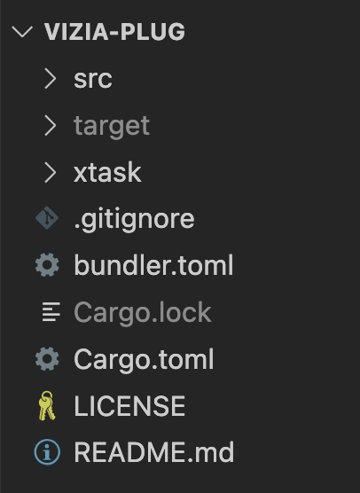

Chapter 1
Creating a new project using the template
First, we'll use cookicutter to create a new nih-plug project using the nih-plug template.
We can run the template generator using pipx with the following in a directory of your choosing:
pipx run cookiecutter gh:robbert-vdh/nih-plug-template
The CLI tool will prompt you to enter a name for the plugin, in this case we've chosen 'vizia_plug', as well as some additional information. Once completed, the project structure should look like the following:
Adding the Vizia dependency
The template creates a nih-plug project without a GUI, so first we need to change the dependencies to include vizia into the project.
Open the Cargo.toml and add the following dependency below the nih_plug dependency:
nih_plug_vizia = { git = "https://github.com/robbert-vdh/nih-plug.git" }
Note that the git URL is the same as the nih_plug dependency above it as the crates are from the same repository.
Adding a basic Vizia GUI
Now we'll setup a simple GUI for our plugin. Add an editor.rs file to the src directory with the following content:
#![allow(unused)] fn main() { use nih_plug::prelude::Editor; use nih_plug_vizia::vizia::prelude::*; use nih_plug_vizia::{create_vizia_editor, ViziaState, ViziaTheming}; use std::sync::Arc; use crate::ViziaPlugParams; pub(crate) fn create(_params: Arc<ViziaPlugParams>) -> Option<Box<dyn Editor>> { create_vizia_editor( ViziaState::new(|| (200, 150)), ViziaTheming::Custom, move |cx, _| { Label::new(cx, "Hello Plugin GUI"); }, ) } }
The create_vizia_editor function creates the vizia GUI window with a size determined by the ViziaState. For now this state is hard-coded but later we'll move it to the plugin parameters so that the window state is remembered between successive openings of the window.
Within the closure passed to the create_vizia_editor function is where we create the vizia GUI and add some controls. In this case we've added a simple label to begin with.
To actually add the GUI to the plugin we need to add an editor method to the Plugin trait implementation of ViziaPlug. Add the following to lib.rs below the process method:
#![allow(unused)] fn main() { fn editor(&mut self, _async_executor: AsyncExecutor<Self>) -> Option<Box<dyn Editor>> { editor::create(self.params.clone()) } }
And also include the editor module by adding 'mod editor;' to the top of the lib.rs file above the ViziaPlug struct definition.
Running the plugin standalone
For testing purposes it can be useful to run the plugin standalone, which does not require a host.
To run the plugin standalone, first add the standalone feature to the nih_plug dependency in the Cargo.toml file:
nih_plug = { git = "https://github.com/robbert-vdh/nih-plug.git", features = ["assert_process_allocs", "standalone"] }
Next, also in the Cargo.toml file, change the crate-type to include "lib", like so:
crate-type = ["cdylib", "lib"]
Then, add a main.rs file to the src directory with the following:
use nih_plug::prelude::*; use vizia_plug::ViziaPlug; fn main() { nih_export_standalone::<ViziaPlug>(); }
For the above to work the ViziaPlug struct must be made public.
Finally, use cargo run to build and run the standalone version of the plugin, which should then appear: